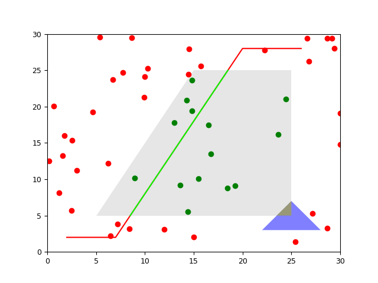

1.3.3.6.1. Les polygones¶
Fait appel au module externe : geoslib.

On se sert de la librarie de manipulation des formes (points, lignes, polygones) pour calculer des intersections, des aires, savoir quelle forme contient quel autre.
# Importation des formes depuis la libraire de polygones
from _geoslib import Point, LineString, Polygon
# Polygone
import numpy as N
# - points sous la forme [[x1,y1],[x2,y2],...]
pp = N.array([[5., 5.], [25., 5.], [25., 25.], [15., 25.]])
# - transformation de numpy a Polygon
poly = Polygon(pp)
# - calcul de l'aire
print poly.area()
# -> 300.0
# - plot grace a 'boundary'='get_coord()' (= pp)
import pylab as P
P.fill(poly.boundary[:, 0], poly.boundary[:, 1],
facecolor=(.9, .9, .9))
# Points aleatoires et inclusion
# - coordonnees
xpts = N.random.random(50)*30
ypts = N.random.random(50)*30
# - transformation en Points
pts = []
for x, y in zip(xpts, ypts):
pts.append(Point((x, y)))
# - plot avec couleur differente si dans polygone
for pt in pts:
# - utilisation de 'within()'
color = ('r', 'g')[pt.within(poly)]
# - plot grace a 'boundary'
x, y = pt.boundary
P.plot([x], [y], 'o'+color)
# Ligne de points et intersection
# - coordonnees
xy = N.array([[2., 7., 20., 26.], [2., 2., 28., 28.]])
# - LineString
line = LineString(xy.transpose())
# - plot
P.plot(xy[0], xy[1], '-r')
# - intersection (via 'intersects()') ?
print line.intersects(poly)
# -> True
# - plot des intersections (via intersection)
for subline in line.intersection(poly): # = poly.intersection(line)
xyl = subline.boundary
P.plot(xyl[:, 0], xyl[:, 1], '-', color=(0, 1, 0))
# Autre polygone
# - creation et plot
xyp = N.array([[22., 3], [25., 7], [28, 3]])
triangle = Polygon(xyp)
P.fill(xyp[:, 0], xyp[:, 1], facecolor='b', alpha=.5)
# - intersections
if triangle.intersects(poly):
for pol in triangle.intersection(poly):
xyp = pol.boundary
P.fill(xyp[:, 0], xyp[:, 1], facecolor='y', alpha=.5)
# Trace
from vacumm.misc.plot import savefigs
P.axis([0, 30, 0, 30])
savefigs(__file__, pdf=True)
P.close()